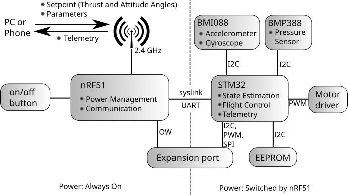
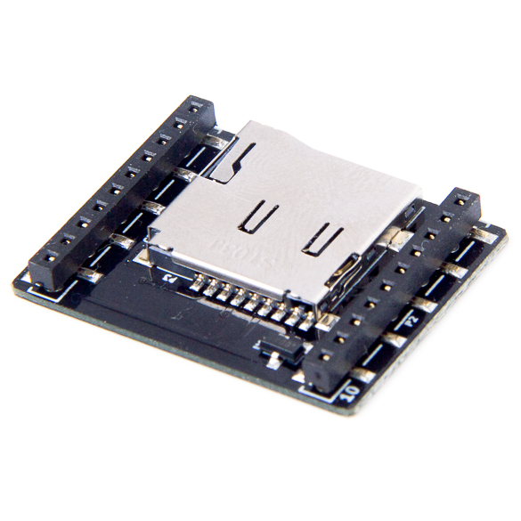
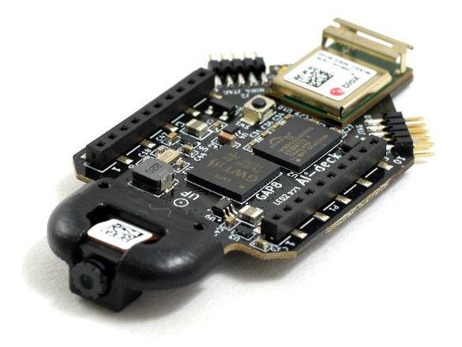
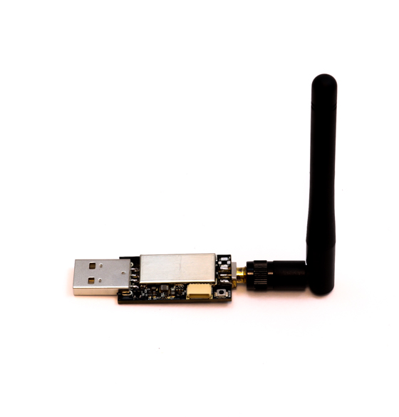

Flying Robots
Physical Hardware Experiments
Wolfgang Hönig
Nov 14, 2025
Grading
Grading Criteria
- 20 (/ 100) points: simulation code and verbal discussion
- 12 points code (written core math routines; correct dynamics; infrastructure code for simulation)
- 2 points validation synthetic data (unknown params)
- 3 points validation real data
- 3 points integration schema analysis
Assignment 1
- Show an example run of your code.
- Show your validation on synthetic data
- (known params)
- unknown params (how did you get the params)?
- Show your validation on real data
- Show your table/plot/results comparing two integration schemes.
Generally:
- What was difficult?
- What was easy?
Notes and Lessons Learned
Open loop control for UAVs impossible!
- forum
- for integration, what order; what should we do first (new, old, mean?)
- why do angular velocities match so well?
- why do we see errors even in synthetic data (values not correct?)
- RK4 vs Euler
- generics
Physical Flights
Crazyflie 2.1 Hardware Overview
- Sensors:
- Accelerometer / Gyroscope (BMI088)
- Pressure sensor (BMP388)
- Actuators:
- 4 brushed motors with propellers
- Compute:
- Flight control: STM32 microcontroller (ARM Cortex-M4, 168 MHz, 192 kb RAM, 1 MB flash)
- Communication: nRF51 (ARM Cortex-M0, 32 MHz, 16 kB RAM)
- Extendable with add-on boards (decks)

Crazyflie 2.1 Hardware Schema

Crazyflie 2.1 Notable Extensions
Flow-Deck

- Measures height (ToF up to 4m, VL53L1x)
- Measures horizontal velocity (PMW3901)
uSD-deck

- Can store binary flight logs
AI Deck

- Camera (320x320)
- 8+1 core RISC-V MCU (no FPU)
Crazyradio
- nRF52840 with power amplifier and external antenna
- Cortex-M4F (64MHz, 1MB flash, 256Kb RAM)
- 2.4 GHz band
- BlueTooth LE
- proprietary Nordic modes (low latency)
- USB interface

Crazyflie 2.1 Official Software
- User facing libraries
- Phone applications (Android, iPhone)
- cflib: Python API to control robot(s) via Crazyradio; crazyflie-lib-rs: Rust library
- cfclient: GUI for a single robot (Python, based on cflib)
- Low-level (mostly C)
- STM32 Firmware: Primary flight control firmware
- AI deck examples
- NRF51 firmware, various Bootloaders, Crazyradio firmware
Flight Demo
- Crazyflie with flow deck controlled in cfclient
Flight Control Firmware (CF)
Flight Control Firmware (PX4)
Flight Control Demo: Hello Rust
Install Rust for our target:
rustup target add thumbv7em-none-eabihfBuild official example:
Flash:
- Turn of the Crazyflie (short press power button)
- Put in bootloader (press power button for about 3 seconds)
make cload
Flight Control Demo: Custom Controller
Rust Interoperability
Background
- Projects are often written in several different languages
How can we cross the language barrier?
- exec/fork (input/output via files)
- Inter-process communication (MPI, shared memory, …)
- Share the same Application Binary Interface (ABI) and link code
- Most common example: C, C++ to be called from Python (e.g., numpy, pyTorch)
Calling Rust From C
- Mark as
extern Cand disable name mangling
Export a function written in Rust
Call the function from C
Calling C From Rust
- Import a function (need to use Rust syntax and types!)
C function to import
Rust code to call that function
Revisiting app_hello_rs
#![no_std]
use panic_halt as _;
extern "C" {
pub fn vTaskDelay(ticks: u32);
pub fn consolePutchar(ch: i32) -> i32;
}
fn console_print(msg: &str) {
for c in msg.as_bytes() {
unsafe{ consolePutchar(*c as i32); }
}
}
#[no_mangle]
pub extern "C" fn appMain() -> i32 {
console_print("Hello from Rust2!\n");
loop {
unsafe { vTaskDelay(1000); }
}
}Practical Considerations and Other Languages
- More details: see Foreign Function Interface
- Converting C(++) syntax to Rust can be hard for custom data types (nested structs, unions, …)
- use bindgen instead
- Python ⇔ Rust: pyo3
Assignment 1.5 (Not Graded)
Instructions
- Make sure you can compile the firmware (instructions)
- Create your own “app” example for assignment1
- Add and compile your existing math library
- Trigonometric functions are not in core; import
sinf,cosfetc. from C
- Trigonometric functions are not in core; import
- Generate bindings for the controller using
bindgen- The easiest (to not deal with errors) is to copy
stabilizer_types.hand only include the structs that you need
- The easiest (to not deal with errors) is to copy
- Test flight with stock software
Assignment 1.75 (Not Graded)
Motivation
Instructions
- Use the known parameters of the Multirotor2D in your simulator (from assignment 0)
- Implement an LQR controller \(u=-K x\), where \(K\) can be computed using any LQR toolbox (e.g., lqr in Rust)
Conclusion
Learned Today
- Assignment 1 grading
- Specifics of the hard- and software used for the class
- Rust: Interoperability with other languages
- Assignments 1.5 and 1.75 (as preparation for assignment 2)
Next Week
Controls lecture and Assignment 2.
Questions
?